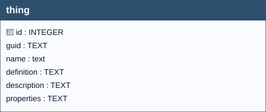

The OGC SensorThings API Standard follows the ITU-T definition with regard to the Internet of Things: A thing is an object of the physical world (physical things) or the information world (virtual things) that is capable of being identified and integrated into communication networks ITU-T-Y.2060. A Thing is related to the Platform entity as described in Section 4.9.2.1 of OGC 16-079 in a way that any entity that can be modelled as a Thing may be subsequently translated to a Platform and vice versa. 1
SensorThings API 2.0 (23-019) (DRAFT),
version 23-019.
https://hylkevds.github.io/23-019/23-019.html
This document describes how the Thing table is automatically managed within the GeoPackage through a set of database triggers based on the soft reference principle.The automation ensures consistent creation, reuse, and maintenance of Thing records when Datastreams are created, while still allowing manual user intervention when needed.
When a Datastream is created without explicitly specifying the guid_thing field, the system automatically determines and associates an appropriate Thing based on the related Feature of Interest (FoI).
The process follows a predefined set of rules to:
Thing if it does not exist;Thing if one is already available;The system applies a soft reference strategy:
Thing table stores a GUID that mirrors the GUID of the related FoI.This approach allows flexibility while maintaining logical consistency.
When the FoI is a Soil Site:
Thing table only if it does not already exist, using:
Thing is reused.When the FoI is a Soil Derived Object:
Thing row is created if it does not exist; otherwise, it is reused.The system first determines the type of soil profile.
Thing row is created (if not already present) using:
Thing (identified by the soil site GUID) is:
When the FoI is a Profile Element:
Thing.Important
Fallback Case
If it is not possible to determine an appropriate Thing:
Thing named “Soil”.Thing:The automated management does not prevent user control.
Users can:
Thing;Thing associated with a Datastream;Thing entries and associate them with Datastreams.Note
If no manual action is taken, the system fully manages Thing creation and association automatically.
Note
Propagation of Updates Additional triggers ensure consistency when changes occur in the GeoPackage involving:
When these entities are updated:
Thing entries are automatically updated;The trigger-based management of the Thing table:
This design balances automation, flexibility, and data integrity within the GeoPackage.

thing| Name | Type | Constraints | Description |
|---|---|---|---|
id |
INTEGER |
PRIMARY KEY | A unique, read-only attribute that serves as an identifier for the entity. |
guid |
TEXT |
Universally unique identifier. | |
name |
TEXT |
NOT NULL | A property provides a label for Thing entity, commonly a descriptive name. |
definition |
TEXT |
The URI linking the Thing to an external definition. Dereferencing this URI SHOULD result in a representation of the definition of the Thing. | |
description |
TEXT |
This is a short description of the corresponding Thing entity. | |
properties |
TEXT |
mime type: ‘application/json’. A JSON Object containing user-annotated properties as key-value pairs. |
In this table, the primary key is the id field (integer, auto-incrementing).
There is also a text field named GUID, which stores a UUID (Universally Unique Identifier) compliant with RFC 4122.
Although GUID is not mandatory at the schema level (it is not declared NOT NULL), its functional requirement is enforced by two triggers:
Any foreign keys (FK) from other tables reference this table’s GUID field rather than the id field, ensuring stable and interoperable references across datasets and database instances.
Note
GUID management is handled by database triggers, which ensure their automatic generation at the time of record insertion, without any user involvement.
datastream.guid_thing → thing.guid (ON UPDATE CASCADE, ON DELETE CASCADE)For every trigger you will find:
thingguid / thingguidupdateWhen they run: AFTER INSERT / AFTER UPDATE OF guid
What they do: Assign GUID at insert when missing; prevent changes later.
If the check passes: Insert writes GUID; unchanged updates proceed.
If the check fails: On change, abort with: Cannot update guid column.
Hylke van der Schaaf — Open Geospatial Consortium (OGC), ↩